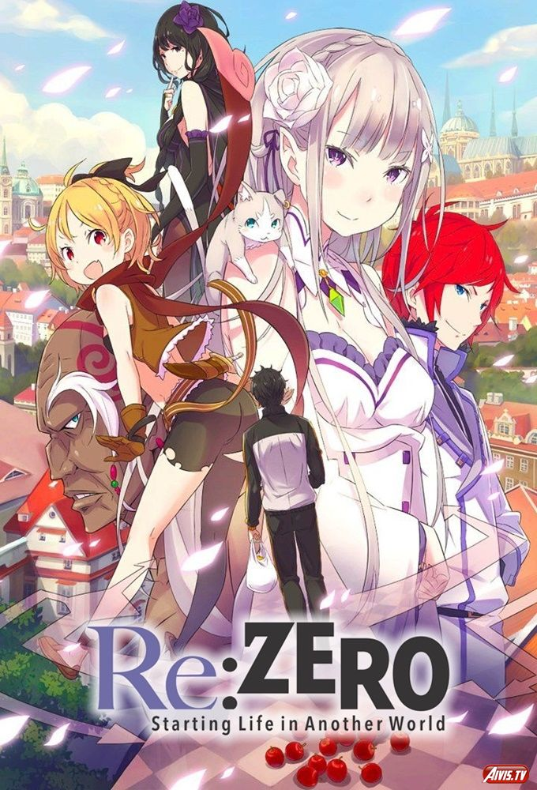
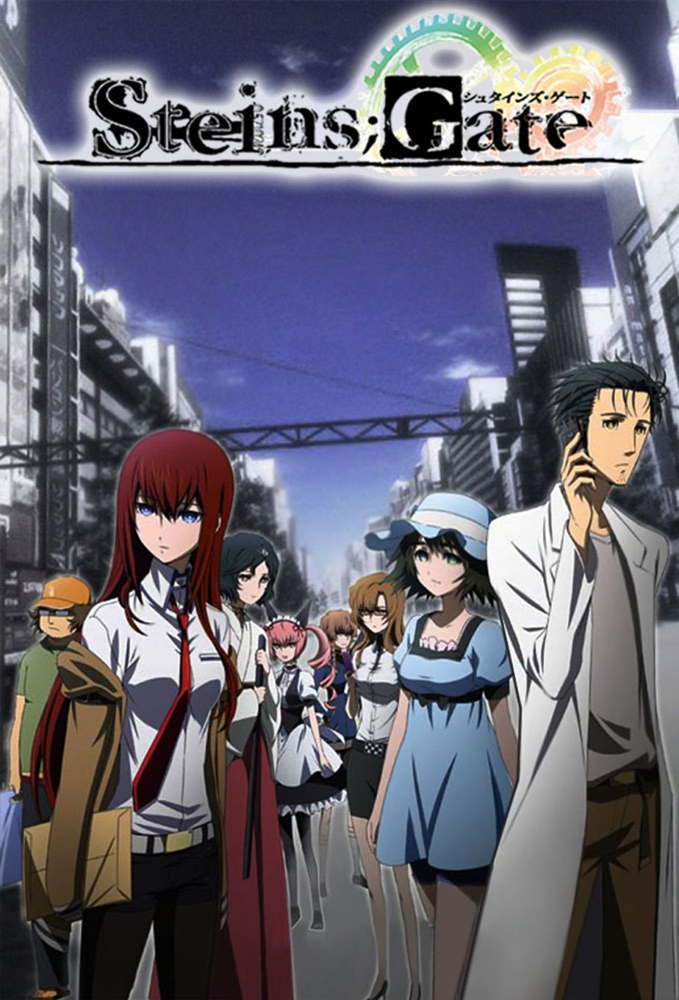

Мои любимые тайтлы
На самом деле все аниме, которые я здесь буду рассматривать уже были упомянуты на предыдущих страницах, просто я хочу рассказать о них поподробнее.
Субару Нацуки - обычный ученик старшей школы, которому приспичило сгонять в магазин на ночь глядя. Но на обратном пути из магазина он каким-то чудом попадает в другой мир. Оказывается чёрт знает где, имея при себе лишь бумажник с никому не нужными деньгами нашего мира, лапшу быстрого приготовления, немного снэков, свитер и сникерс. Особо не разгуляться, так на него ещё и грабители нападают и избивают чуть ли не до потери пульса. Но от смерти Субару спасает очаровательная беловолосая заклинательница духов. В благодарность за спасение наш герой, конечно же, вызывается помочь незнакомке вернуть похищенную у неё вещь. Но, вот незадача. Как только им удается заполучить подсказку, их... убивают.
Акихабара – интереснейшее место, где обитают самые разные люди – от слегка сдвинутых по фазе до больных на всю голову. Именно такая компания собралась в Лаборатории проблем времени, что над лавкой старых телевизоров. Возглавляет её 18-летний Ринтаро Окабэ, сумасшедший ученый и борец с мировым заговором. В серьезном деле нельзя без хакера – вот и он, Итару Хасида, конечно же, толстяк и истинный отаку. Добрая фея лаборатории – Маюри Сиина, подруга детства Ринтаро, официантка мейд-кафе и фанатка косплея, а научную мощь бригады резко повысила юный гений Курису Макисэ, истосковавшаяся по интеллектуальным приключениям и простому человеческому теплу. Компании удалось построить машину времени из микроволновки и барахла с ближайшей распродажи. Великие открытия делают любители, а профессионалы строят «Титаники». Вот только потом началось такое, что парадокс дедушки нервно удалился курить в сторонку, а главный герой трижды проклял тот день, когда сдуру открыл врата Штейна. Он был готов рисковать своей жизнью, но не чужими. Впрочем, сделанного, как известно, не воротишь. Или… все же можно?
Если вы никогда не плакали над аниме-сериалами, самое время ознакомиться с «Angel Beats!» - невероятно трогательной историей школьника Юзуру, преждевременно оказавшегося в Чистилище. Там парень встречает сверстников, которые пытаются раскрыть тайну этого загадочного места и вернуться в свой мир. Как это бывает, вскоре их представление о мире и друг о друге кардинально меняются, что приводит к… и тысячи строк великого и могучего не хватит, чтобы описать эпилог, тем более «Ангельские Ритмы!» смотрятся на одном дыхании - с подобной классикой, смешивающей в себе несколько жанров, грех не ознакомиться как заядлому зрителю, так и только что открывшим для себя аниме.

Я мог бы ещё долго описывать самые разные аниме, которые мне очень нравятся(таких ещё штуки 3 можно найти), но это будет очень долго, а потому, предлагаю вам самим найти ваши любимые аниме, посредством самостоятельного просмотра всего, что привлечёт ваш взгляд
под покравительством Dust Corp
Авчаров Даниил